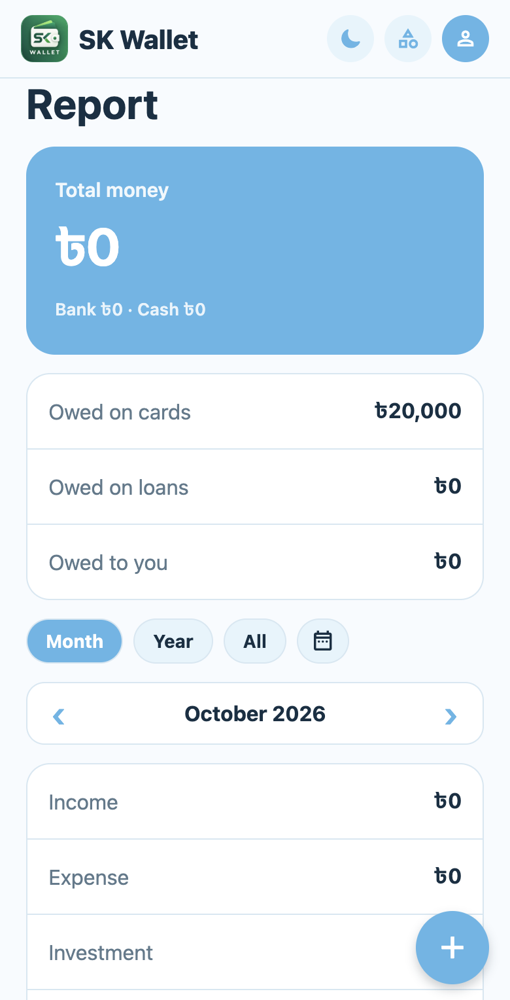
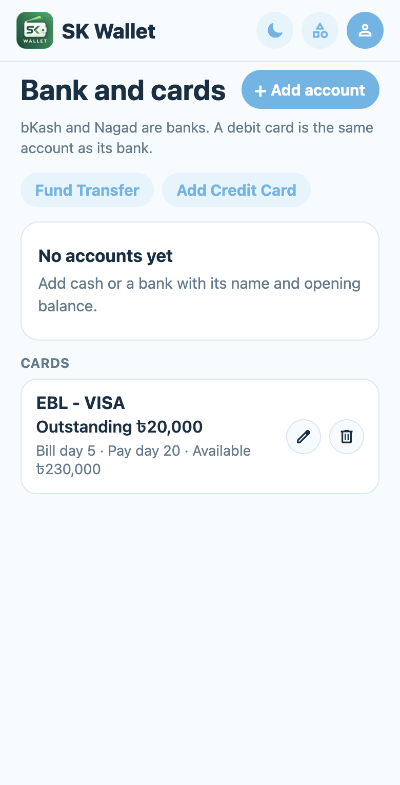
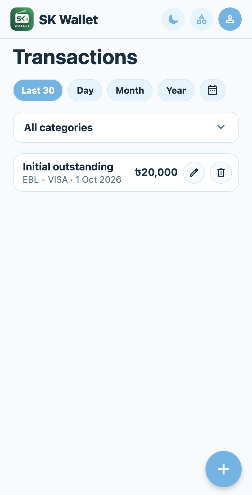
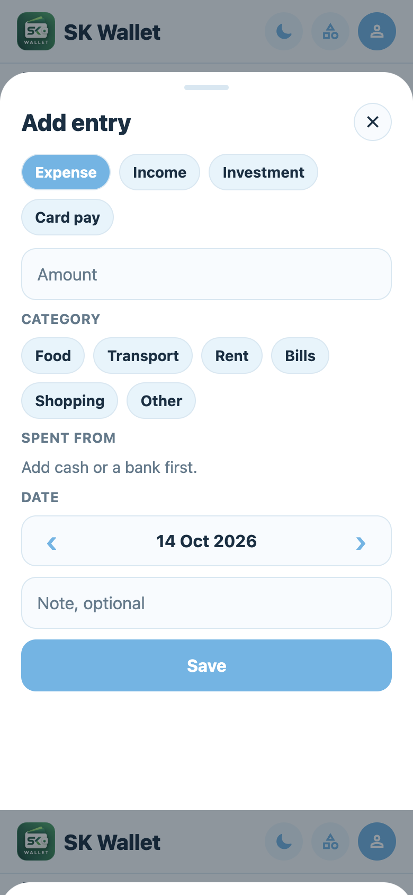
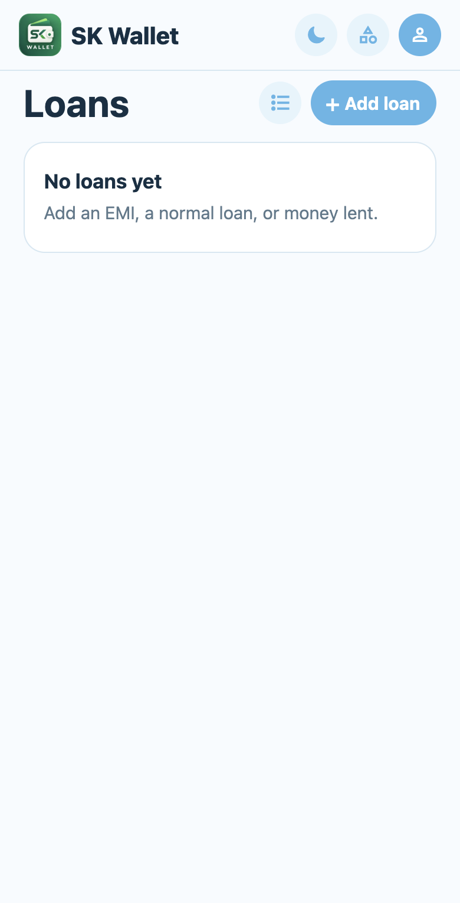
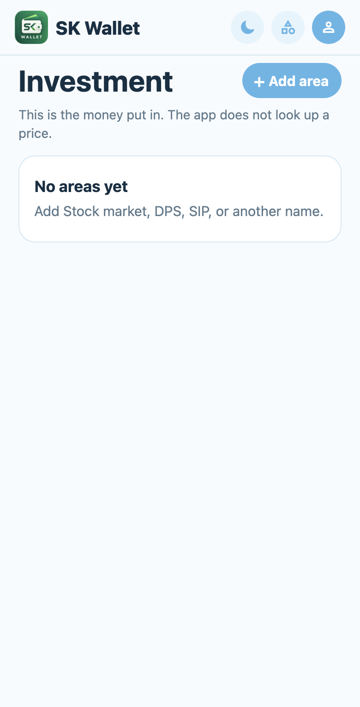

Report
Total bank and cash, card and loan debt, and income / expense / investment for the month you pick.
Personal money app
See total money, card bills, loans, and investments in one place. Add daily entries from a floating plus — banks, cash, bKash, and Nagad included.
Preview build for your phone. Opens over the existing SK Wallet so your records stay.

Built for day-to-day money in Bangladesh — Taka amounts, bank and mobile wallet accounts, credit cards, EMIs, and money you put into investments.
Total bank and cash, card and loan debt, and income / expense / investment for the month you pick.
Cash, banks, bKash, Nagad, and credit cards with bill day, pay day, and outstanding.
Quick add from the plus button. Track EMIs and money lent. Log investment areas without live prices.
Same screens as the live app. Use this as a short user manual after you install.
Report opens first. The blue card is total money (bank + cash). Below that: owed on cards, owed on loans, and money owed to you.
Add cash or a bank with a name and opening balance. bKash and Nagad count as banks. A debit card is the same account as its bank — credit cards sit under Cards.

Every income, expense, investment, and card pay shows here. Filter by Last 30, Day, Month, Year, or a custom calendar range, then narrow by category.

Tap the blue + button. Choose Expense, Income, Investment, or Card pay, enter the amount, pick a category, choose where it came from (or went), set the date, and Save.

Track what you still owe and what others owe you. Paid loans lock so you do not edit them by mistake — reopen when you need to.

Create areas like Stock market, DPS, or SIP and record what you contributed. The app does not look up live market prices — it tracks what you put in.

Use the latest preview build. Install over the SK Wallet that already has your records — do not uninstall first.
com.myfirstapp) so balances and history stay.iPhone install needs a registered device and a separate iOS preview build. Ask when you are ready for that.